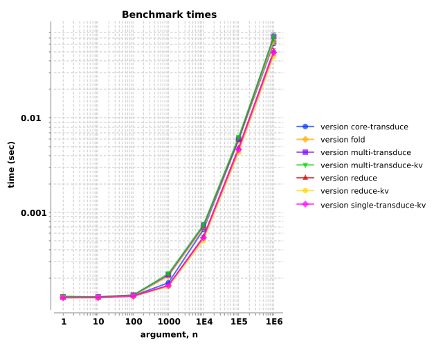
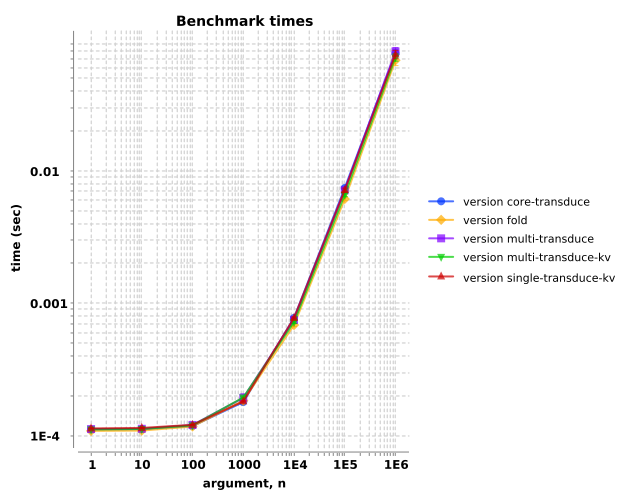
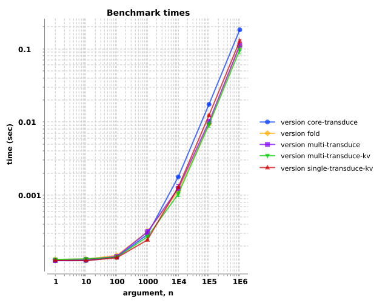
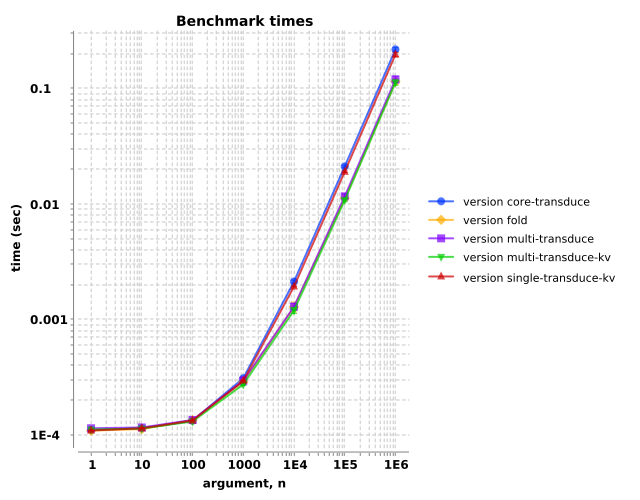

transduce variants perform compared to Clojure's reduce, et al.?
Observations: The single-threaded variants perform similarly, while the multi-threaded variants are faster for large vectors and heavier computations.
See also:
Two of Brokvolli's goals are
transduce's performance benefits to
reduce-kv-style processing.
fold's multi-threading
performance benefits to both transduce and transduce-kv.
We'll define our benchmarks here. For each function, we'll test vectors increasing in length from one element to one‑million elements, by powers of ten. We'll arrange four different tests:
The functions under examination are as follows:
clojure.core/reduce
clojure.core/reduce-kv
clojure.core/transduce
brokvolli.single/transduce-kv
brokvolli.multi/transduce
brokvolli.multi/transduce-kv
a naive sequence implementation
Overall, we observe that the execution times increase with increasing vector lengths. The results are indistinguishable when the vector contains
one‑hundred or fewer elements. When the vectors grow longer and the processing stack is small (i.e., one or three transforms), the single-threaded
functions tend to perform slightly faster. However, when the vector lengths approach one‑million elements and the processing stack involves more
transforms, the multi-threaded variants (fold, multi/transduce, and multi/transduce-kv), offer improvements that
scale roughly with the number of processors.
Brokvolli's multi-threaded transduce and transduce-kv may offer performance benefits over their single-threaded counterparts
for large collection sizes and deep transformer stacks. For smaller collections or shallow transformer stacks, the single-threaded variants perform
better, and present a simpler interface.
This test performs one operation per element: incrementing the number. Since we're only doing one operation, we can straightforwardly compare to
reduce and reduce-kv as well.
Execution times increase with vector length, with the single-threaded functions performing best for all vector lengths. With only one operation per element, the overhead of multi-threading machinery results in slower times.
The lines aren't perfectly straight because Clojure requires some non-zero time to reduce over an empty or nearly-empty vector. On this machine, that non-zero time is about 120 microseconds.

| arg, n | |||||||
|---|---|---|---|---|---|---|---|
| version | 1 | 10 | 100 | 1000 | 10000 | 100000 | 1000000 |
| core-transduce | 1.2e-04±2.1e-06 | 1.2e-04±6.9e-07 | 1.3e-04±1.2e-06 | 1.8e-04±1.6e-06 | 6.6e-04±1.0e-05 | 5.8e-03±1.2e-04 | 6.1e-02±3.7e-03 |
| fold | 1.3e-04±2.2e-06 | 1.3e-04±1.1e-06 | 1.3e-04±7.1e-07 | 2.1e-04±1.9e-06 | 6.8e-04±1.8e-05 | 5.8e-03±1.3e-04 | 6.4e-02±5.2e-03 |
| multi-transduce | 1.3e-04±2.4e-06 | 1.3e-04±2.7e-06 | 1.3e-04±2.6e-06 | 2.2e-04±7.8e-06 | 7.2e-04±6.0e-05 | 5.9e-03±1.6e-04 | 7.2e-02±7.0e-03 |
| multi-transduce-kv | 1.3e-04±3.4e-06 | 1.3e-04±2.1e-06 | 1.3e-04±2.0e-06 | 2.2e-04±9.1e-06 | 7.3e-04±3.3e-05 | 6.2e-03±2.1e-04 | 7.0e-02±6.6e-03 |
| reduce | 1.2e-04±2.1e-06 | 1.2e-04±1.2e-06 | 1.3e-04±1.2e-06 | 1.7e-04±2.7e-06 | 5.5e-04±1.5e-05 | 4.8e-03±1.2e-04 | 5.0e-02±3.0e-03 |
| reduce-kv | 1.2e-04±2.6e-06 | 1.2e-04±7.6e-07 | 1.3e-04±1.1e-06 | 1.6e-04±2.9e-06 | 5.0e-04±8.1e-06 | 4.3e-03±1.4e-04 | 4.5e-02±2.9e-03 |
| single-transduce-kv | 1.2e-04±2.4e-06 | 1.2e-04±2.0e-06 | 1.3e-04±9.8e-07 | 1.7e-04±2.5e-06 | 5.4e-04±8.5e-06 | 4.6e-03±1.6e-04 | 4.9e-02±3.1e-03 |
This test involves three operations per element: incrementing the number, filtering (retaining) if the result is less than a specified cutoff, then removing if the result is greater than a different specified cutoff.
With a transform stack of this size, all functions performed roughly similarly.

| arg, n | |||||||
|---|---|---|---|---|---|---|---|
| version | 1 | 10 | 100 | 1000 | 10000 | 100000 | 1000000 |
| core-transduce | 1.3e-04±2.4e-06 | 1.3e-04±1.6e-06 | 1.3e-04±1.5e-06 | 2.1e-04±3.3e-06 | 9.7e-04±1.0e-05 | 9.0e-03±1.4e-04 | 9.4e-02±4.4e-03 |
| fold | 1.3e-04±2.2e-06 | 1.3e-04±9.9e-07 | 1.4e-04±7.0e-07 | 2.4e-04±3.4e-06 | 8.1e-04±2.6e-05 | 6.9e-03±2.6e-04 | 8.4e-02±6.1e-03 |
| multi-transduce | 1.3e-04±5.0e-06 | 1.3e-04±2.8e-06 | 1.4e-04±2.6e-06 | 2.4e-04±5.5e-06 | 8.0e-04±3.1e-05 | 6.8e-03±2.8e-04 | 7.8e-02±8.8e-03 |
| multi-transduce-kv | 1.3e-04±2.8e-06 | 1.3e-04±2.4e-06 | 1.3e-04±2.4e-06 | 2.4e-04±5.4e-06 | 8.3e-04±3.2e-05 | 7.0e-03±1.8e-04 | 8.4e-02±8.0e-03 |
| naive-seq | 1.3e-04±1.7e-06 | 1.3e-04±1.9e-06 | 1.4e-04±2.0e-06 | 2.4e-04±2.4e-06 | 1.3e-03±4.8e-05 | 1.2e-02±2.4e-04 | 1.3e-01±8.0e-03 |
| single-transduce-kv | 1.3e-04±2.2e-06 | 1.2e-04±9.1e-07 | 1.3e-04±1.2e-06 | 2.0e-04±2.6e-06 | 8.6e-04±1.6e-05 | 8.0e-03±1.5e-04 | 8.3e-02±5.0e-03 |
This test is similar to the previous, except the three operations were performed twice (with different filter/remove cutoffs), for a total of six operations per element. With this deeper transform stack, the multi-threaded variants begin to offer faster performance (i.e., lower time) on vectors longer than one thousand elements.

| arg, n | |||||||
|---|---|---|---|---|---|---|---|
| version | 1 | 10 | 100 | 1000 | 10000 | 100000 | 1000000 |
| core-transduce | 1.3e-04±2.8e-06 | 1.3e-04±5.3e-07 | 1.4e-04±1.9e-06 | 2.9e-04±1.9e-06 | 1.8e-03±2.3e-05 | 1.7e-02±2.5e-04 | 1.8e-01±5.4e-03 |
| fold | 1.3e-04±4.1e-06 | 1.3e-04±2.4e-06 | 1.5e-04±2.8e-06 | 3.1e-04±3.0e-05 | 1.1e-03±1.3e-04 | 9.3e-03±4.8e-04 | 1.1e-01±8.4e-03 |
| multi-transduce | 1.3e-04±1.8e-06 | 1.3e-04±3.3e-06 | 1.4e-04±2.5e-06 | 3.1e-04±2.5e-05 | 1.2e-03±1.6e-04 | 1.0e-02±8.7e-04 | 1.1e-01±1.6e-02 |
| multi-transduce-kv | 1.3e-04±3.5e-06 | 1.3e-04±3.1e-06 | 1.4e-04±2.9e-06 | 2.7e-04±3.6e-06 | 1.0e-03±8.1e-05 | 9.1e-03±7.8e-04 | 9.6e-02±1.1e-02 |
| single-transduce-kv | 1.3e-04±2.0e-06 | 1.3e-04±1.0e-06 | 1.4e-04±1.3e-06 | 2.4e-04±4.3e-06 | 1.3e-03±2.0e-05 | 1.2e-02±2.1e-04 | 1.3e-01±5.7e-03 |
Analogous to the previous examples, this test performs twelve operations per element (four cycles of increment, filter, and remove). The
multi-threaded variants (fold, multi/transduce, and multi/transduce-kv), demonstrate noticeably improved
performance (i.e., lower time) for vectors containing more than one thousand elements.
Note the log-log scale, which may visually obscure the performance deltas. Click 'Show details' to see a numeric chart of the measurements. For example, the multi-threaded variants handle the one-million element vectors about twice as fast as the single-threaded variants.

| arg, n | |||||||
|---|---|---|---|---|---|---|---|
| version | 1 | 10 | 100 | 1000 | 10000 | 100000 | 1000000 |
| core-transduce | 1.3e-04±2.8e-06 | 1.3e-04±8.7e-07 | 1.5e-04±1.2e-06 | 3.7e-04±1.9e-06 | 2.6e-03±2.8e-05 | 2.6e-02±3.4e-04 | 2.7e-01±1.0e-02 |
| fold | 1.3e-04±2.8e-06 | 1.3e-04±1.2e-06 | 1.5e-04±3.1e-06 | 3.5e-04±4.7e-06 | 1.4e-03±1.4e-04 | 1.2e-02±8.1e-04 | 1.4e-01±1.5e-02 |
| multi-transduce | 1.3e-04±2.5e-06 | 1.3e-04±1.3e-06 | 1.5e-04±2.2e-06 | 3.6e-04±5.6e-06 | 1.3e-03±3.7e-05 | 1.1e-02±6.5e-04 | 1.3e-01±1.4e-02 |
| multi-transduce-kv | 1.3e-04±2.9e-06 | 1.3e-04±2.7e-06 | 1.5e-04±3.8e-06 | 3.3e-04±2.0e-05 | 1.3e-03±1.1e-04 | 1.1e-02±7.0e-04 | 1.2e-01±1.3e-02 |
| single-transduce-kv | 1.3e-04±2.7e-06 | 1.3e-04±9.8e-07 | 1.5e-04±1.1e-06 | 3.4e-04±2.5e-06 | 2.2e-03±1.9e-05 | 2.2e-02±2.7e-04 | 2.3e-01±8.0e-03 |